Section 1
Brand Narrative &
Awareness Strategy
The core story of a Black institution built to preserve dignity, memory, and permanence.
Chapel of the Lebanon Cemetery · Historical Society of Pennsylvania
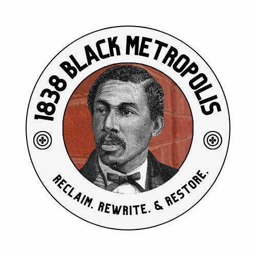
Nothing is locked — this is a draft for you to react to.
The document, the website, the plans.
Read it. Click through it. Share it with your board.
Your changes folded in. Tour StoryMap complete.
The core story of a Black institution built to preserve dignity, memory, and permanence.
Chapel of the Lebanon Cemetery · Historical Society of Pennsylvania
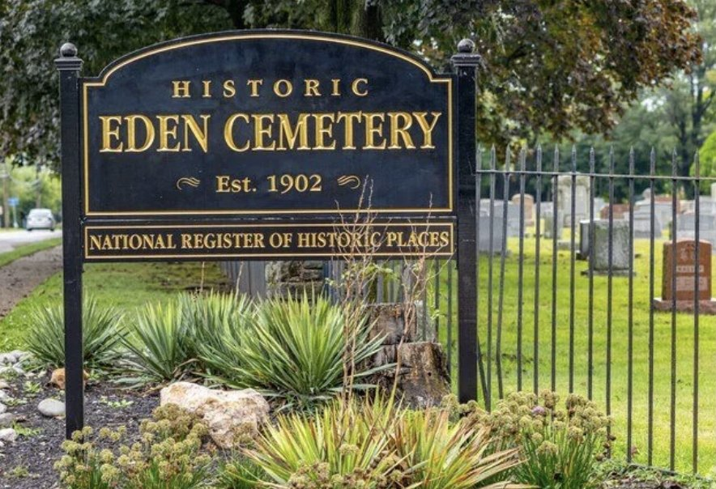
A place created so that dignity would not end at death — where the lives of Black Philadelphia remain visible, protected, and connected to future generations.
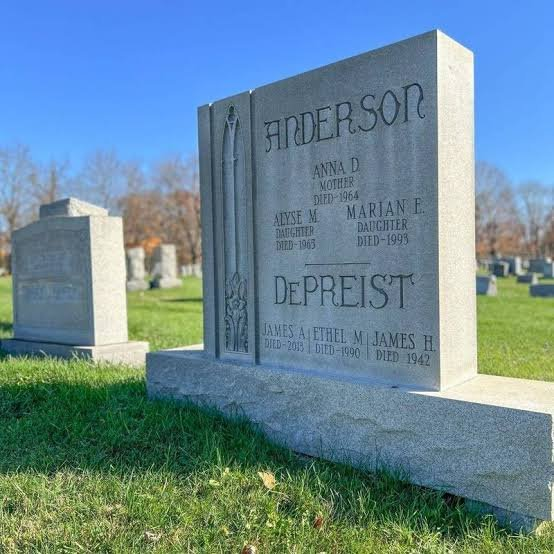
Eden protects more than graves. It protects the dignity, evidence, memory, and continuity of Black life.
From displacement to dignity.
From burial to memory.
From the ancestors to us.
Never morbidity, nostalgia, or generic heritage tourism.
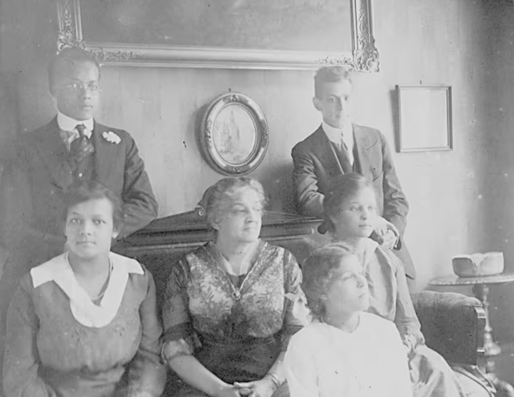
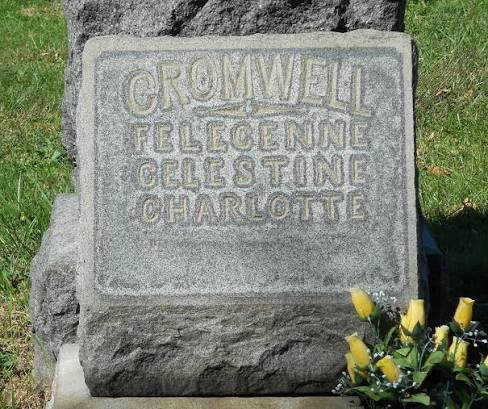
Black-controlled burial space is an act of agency.
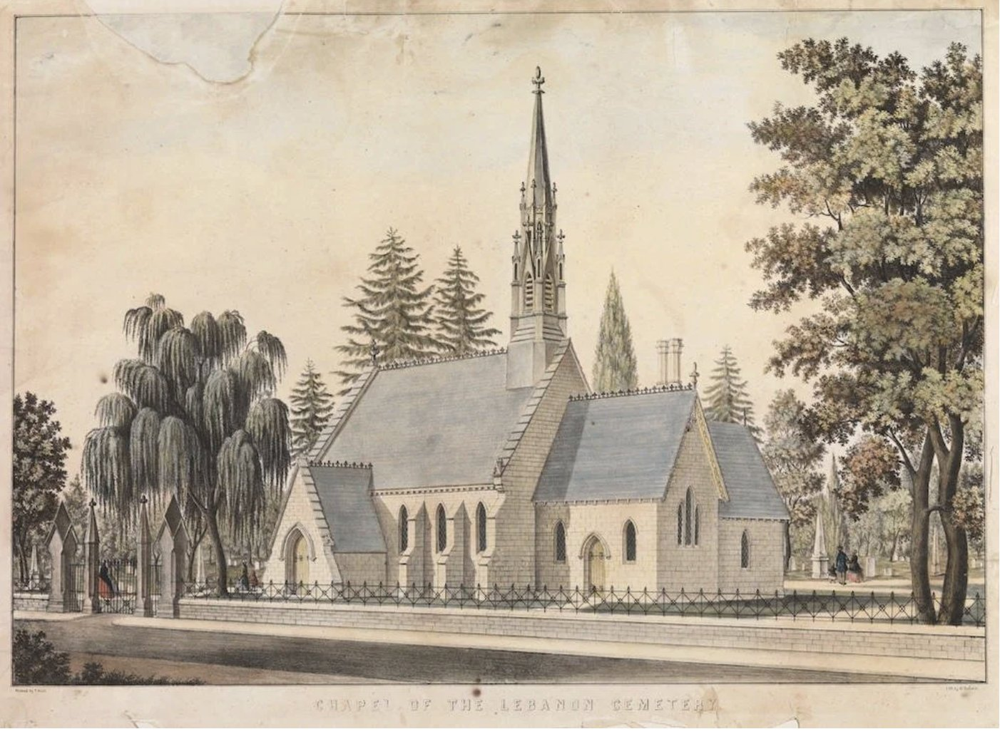
It gathered what the city displaced.
The famous and the familiar.
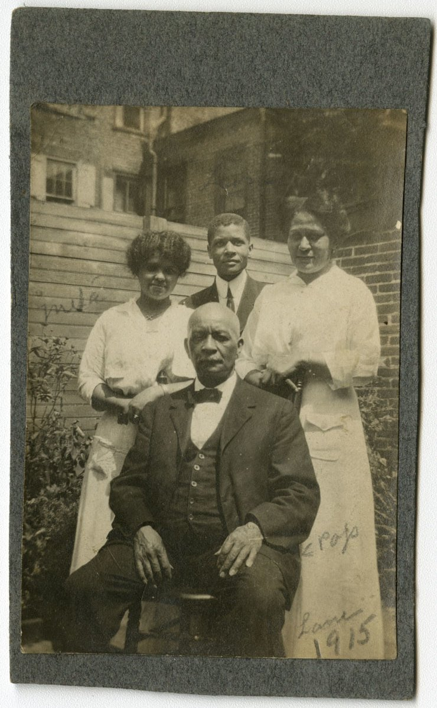
Where descendants find evidence of themselves.
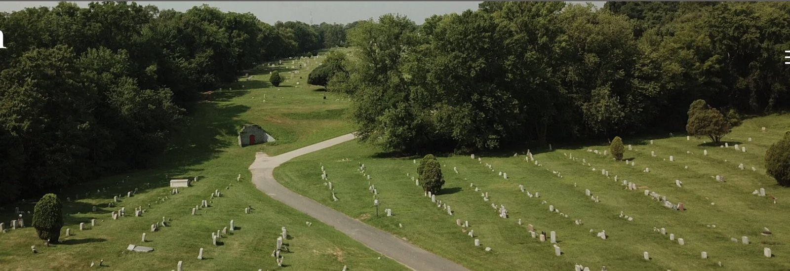
Preservation is not backward-looking.
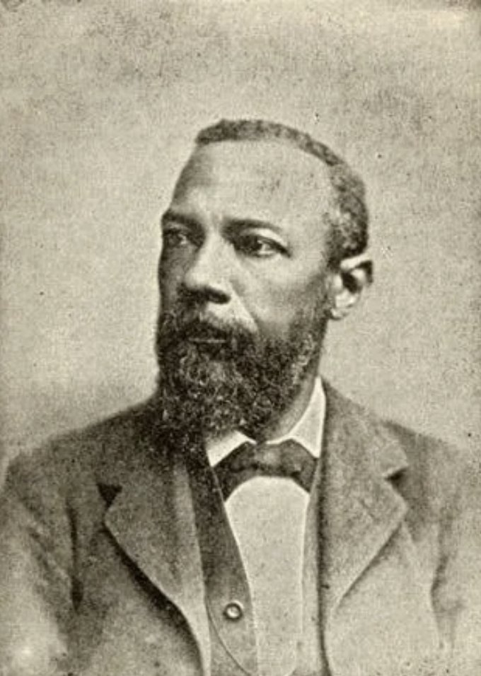
In 1902, Black Philadelphians did something radical: they built their own. For You. By You. Ninety-three thousand souls on Black-owned, Black-controlled sacred ground. That's ours. It still is.
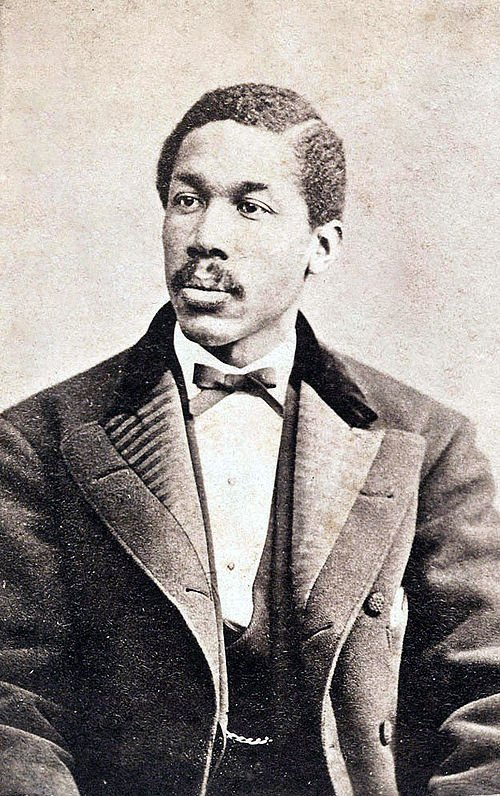
Lebanon. Olive. The great Black burial grounds were forced to close. Only theirs. Even in death, the mistreatment continued. But Eden held them. Eden holds them still.
Sit in the same space as Marian Anderson, Frances Harper, and William Still. Time travel — the past in the present. Come sit with your ancestors. Eden won't let you forget.
The story stays the same; the reason to care changes.
Visit · Bring family · Research · Support
Visit · Add Eden to heritage itineraries
Fund preservation · digitization · education · access
Cover Eden as a living institution
Build awareness before building social.
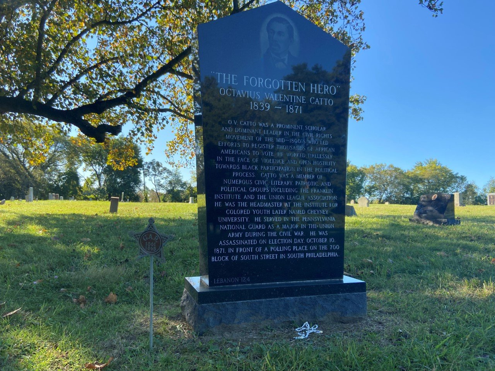
Understand the story in seconds. Know what to do next.
Churches · Divine Nine · schools · HBCU alumni · genealogists · cultural institutions
Preserving Eden means preserving evidence: names, families, institutions, stories, monuments, records — and the ground itself.
Who to approach: Philadelphia-region corporations · foundations for Black history and archives · institutions whose own histories intersect with people buried at Eden.
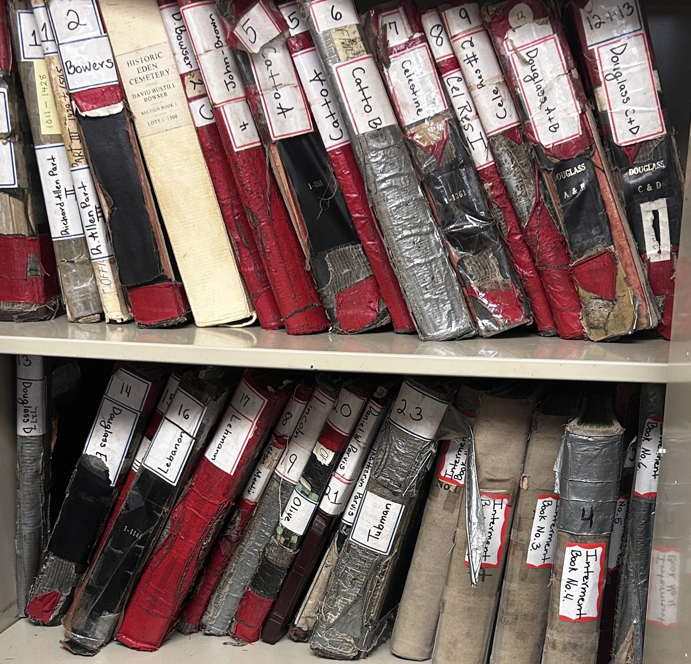
Capacity · a content pipeline · governance · someone who answers within a day.
Match every prospect to one — never a generic ask.
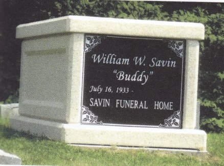
Monuments · landscape · archives · historic sections
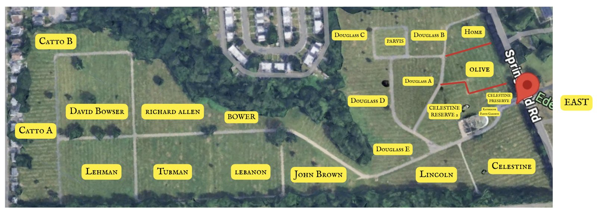
Digitization · mapping · searchable family history
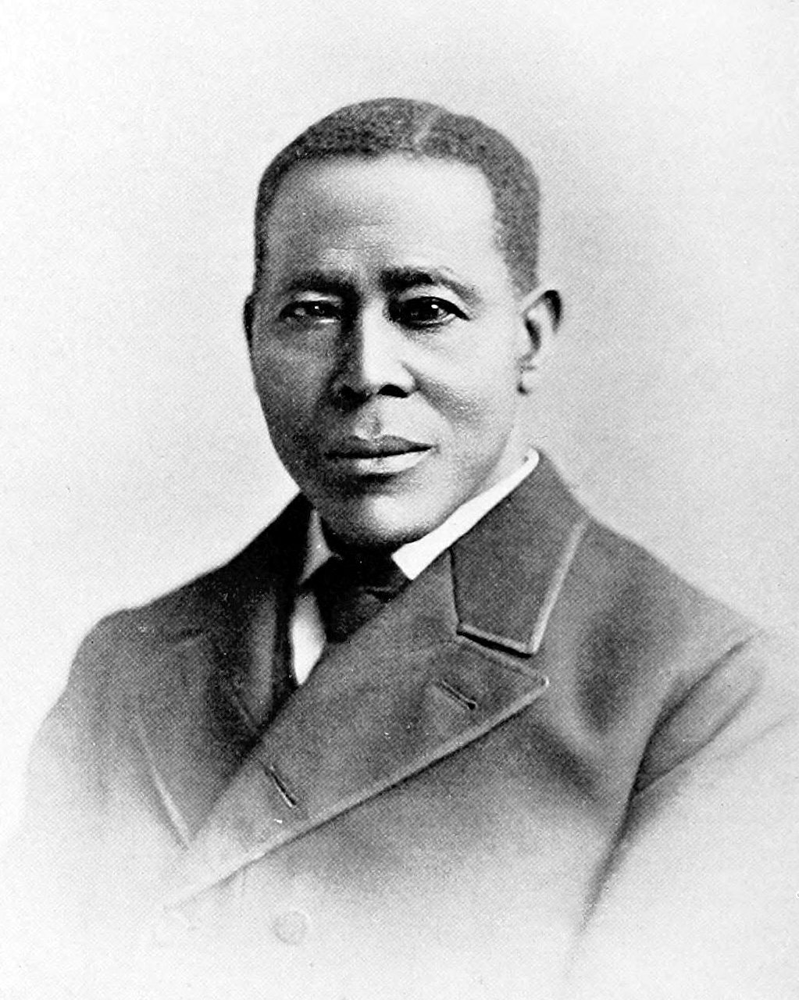
School visits · tours · public-history programs
Community days · genealogy · remembrance
Bringing the brand narrative onto the grounds — an ArcGIS StoryMap organized by theme.
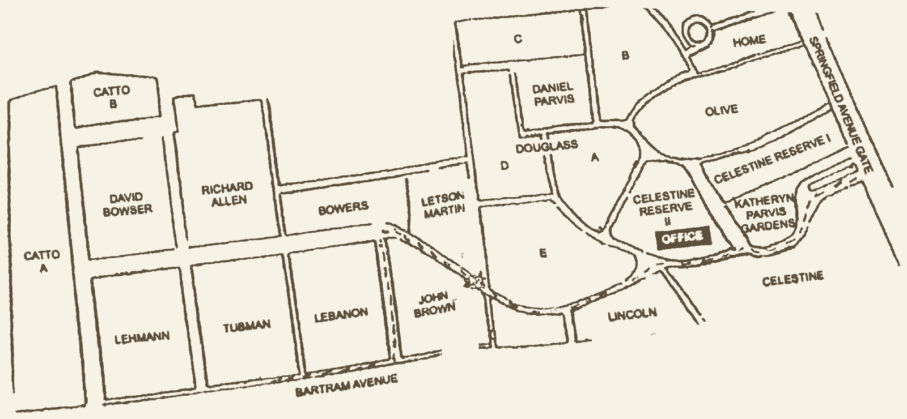
What has been delivered — and how Eden keeps it running with almost no cost and no dedicated technical staff.
Every entry as written, with its source page
Standardized names, sections, lots, dates
Edit this to update the directory
~17,000 lots, each with coordinates
A powerful website that is low cost and low maintenance — and social interaction on existing free tools.
No CMS, no subscription. Get off Squarespace.
Events and news live there — and feed the website.
Social volunteer now. 1838 this year. Students next year.
The hosting fee Eden likely already pays.
Thank you. — 1838 Black Metropolis · Reclaim. Rewrite. & Restore.